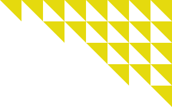

ARUIHA YORU
「みーちゃん」或いは「夜」。いなれば晩。もしは、よさり。
SELECTED WORKS
CURATED PROJECTS // 2024-2026
PROFILE
やあやあ！"或いは夜"ことみーちゃんだよ。ここはただの作品集なので、だいぶはしょって行きましょうね～～。ほら！右側にも作品が浸食（浸蝕／侵蝕.... 誤用が多いですよねー）してきている！うう、溺れるっ！
ENTROPY_ANALYSIS
Investigating the collision of future and past. A real-time physics simulation exploring non-linear chronology and matter assembly.

ZONE_RESTRICTION
Simulating a diminishing battlefield. An automated grid-control system that periodically isolates sectors through procedural hatch-shading.
japanese-capital
A high-fidelity project archives. Exploring the intersection of digital governance and artistic precision.

Noconf
Confは、Nginxで使用される".conf"ファイルのこと。ええと、筆者は、一日に4回、Ubuntuを壊した経験があります。このツールは、何が何でもUbuntuを壊させない、Nginx自動セットアップツールとして作成されました。
No Writing .conf, Just noconf.
noconf は、WindowsからUbuntuサーバーへ、Node.jsアプリケーションを劇的に簡単にデプロイするための「お節介をしない」堅牢なCLIツールです。
ATARI 2600の名作・ADVENTURE。
最近は、C++をWASMにすることを嗜み始めています。ちなみに、この「ADVENTURE」は 世界で初めて、ゲーム内にイースターエッグを隠した ゲームとして知られていますね。余談ですが、このページにも隠し要素があります。このセクションで言う意味を問うてみなさい？
// HOW_TO_PLAY
MOVEMENT: ARROWS or D-PAD
INTERACT: SPACE or ACT
SELECT: ENTER or ENT | RESET: R or RST
- 1. FIND WHITE KEY
- 2. ENTER THE WHITE CASTLE
- 3. CARRY BRIDGE & FIND BLACK KEY
- 4. ENTER THE BLACK CASTLE
- 5. USE BRIDGE & FIND GRAY-DOT
- 6. CARRY GRAY-DOT TO SECRET ROOM